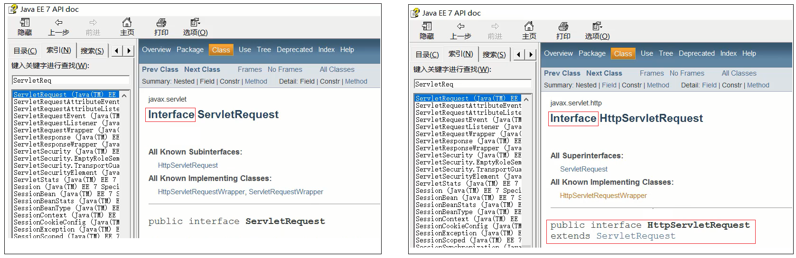

Request和Response的概述
request是请求对象，Response是响应对象。这两个对象在我们使用Servlet的时候有看到

- request:获取请求数据
- 浏览器会发送HTTP请求到后台服务器[Tomcat]
- HTTP的请求中会包含很多请求数据[请求行+请求头+请求体]
- 后台服务器[Tomcat]会对HTTP请求中的数据进行解析并把解析结果存入到一个对象中
- 所存入的对象即为request对象，所以我们可以从request对象中获取请求的相关参数
- 获取到数据后就可以继续后续的业务，比如获取用户名和密码就可以实现登录操作的相关业务
- response:设置响应数据
- 业务处理完后，后台就需要给前端返回业务处理的结果即响应数据
- 把响应数据封装到response对象中
- 后台服务器[Tomcat]会解析response对象,按照[响应行+响应头+响应体]格式拼接结果
- 浏览器最终解析结果，把内容展示在浏览器给用户浏览
Request对象
Request继承体系

从上图中可以看出，ServletRequest和HttpServletRequest都是Java提供的，打开API文档。看出二者是继承关系，但是二者都是接口，无法创建对象
这个时候，我们就需要用到Request继承体系中的RequestFacade:
- 该类实现了HttpServletRequest接口，也间接实现了ServletRequest接口。
- Servlet类中的service方法、doGet方法或者是doPost方法最终都是由Web服务器[Tomcat]来调用的，所以Tomcat提供了方法参数接口的具体实现类，并完成了对象的创建
- 要想了解RequestFacade中都提供了哪些方法，我们可以直接查看JavaEE的API文档中关于ServletRequest和HttpServletRequest的接口文档，因为RequestFacade实现了其接口就需要重写接口中的方法
Request获取请求数据
获取请求行数据
- 获取请求方式:
GET
String getMethod()- 获取虚拟目录(项目访问路径):
/request-demo
String getContextPath()- 获取URL(统一资源定位符):
http://localhost:8080/request-demo/req1
StringBuffer getRequestURL()- 获取URI(统一资源标识符):
/request-demo/req1
String getRequestURI()- 获取请求参数(GET方式):
username=zhangsan&password=123
String getQueryString()通过代码把上述方法都使用下:
@WebServlet("/req1")
public class RequestDemo1 extends HttpServlet {
@Override
protected void doGet(HttpServletRequest req, HttpServletResponse resp) throws ServletException, IOException {
// String getMethod()：获取请求方式： GET
String method = req.getMethod();
System.out.println(method);//GET
// String getContextPath()：获取虚拟目录(项目访问路径)：/request-demo
String contextPath = req.getContextPath();
System.out.println(contextPath);
// StringBuffer getRequestURL(): 获取URL(统一资源定位符)：http://localhost:8080/request-demo/req1
StringBuffer url = req.getRequestURL();
System.out.println(url.toString());
// String getRequestURI()：获取URI(统一资源标识符)： /request-demo/req1
String uri = req.getRequestURI();
System.out.println(uri);
// String getQueryString()：获取请求参数（GET方式）： username=zhangsan
String queryString = req.getQueryString();
System.out.println(queryString);
}
@Override
protected void doPost(HttpServletRequest req, HttpServletResponse resp) throws ServletException, IOException {
}
}获取请求头数据
String getHeader(String name)获取请求体数据
- 获取字节输入流，如果前端发送的是字节数据，比如传递的是文件数据，则使用该方法
ServletInputStream getInputStream()
该方法可以获取字节- 获取字符输入流，如果前端发送的是纯文本数据，则使用该方法
BufferedReader getReader()代码实现：
- 在项目的webapp目录下添加一个html页面，名称为：
req.html
<!DOCTYPE html>
<html lang="en">
<head>
<meta charset="UTF-8">
<title>Title</title>
</head>
<body>
<!--
action:form表单提交的请求地址
method:请求方式，指定为post
-->
<form action="/request-demo/req1" method="post">
<input type="text" name="username">
<input type="password" name="password">
<input type="submit">
</form>
</body>
</html>- 在Servlet的doPost方法中获取数据
/**
* request 获取请求数据
*/
@WebServlet("/req1")
public class RequestDemo1 extends HttpServlet {
@Override
protected void doGet(HttpServletRequest req, HttpServletResponse resp) throws ServletException, IOException {
}
@Override
protected void doPost(HttpServletRequest req, HttpServletResponse resp) throws ServletException, IOException {
//在此处获取请求体中的数据
}
}- 调用getReader()或者getInputStream()方法，因为目前前端传递的是纯文本数据，所以我们采用getReader()方法来获取
/**
* request 获取请求数据
*/
@WebServlet("/req1")
public class RequestDemo1 extends HttpServlet {
@Override
protected void doGet(HttpServletRequest req, HttpServletResponse resp) throws ServletException, IOException {
}
@Override
protected void doPost(HttpServletRequest req, HttpServletResponse resp) throws ServletException, IOException {
//获取post 请求体：请求参数
//1. 获取字符输入流
BufferedReader br = req.getReader();
//2. 读取数据
String line = br.readLine();
System.out.println(line);
}
}BufferedReader流是通过request对象来获取的，当请求完成后request对象就会被销毁，request对象被销毁后，BufferedReader流就会自动关闭，所以此处就不需要手动关闭流了。
获取请求参数的通用方式
- GET方式:
String getQueryString()- POST方式:
BufferedReader getReader();有了上述的知识储备，我们来实现一个案例需求:
（1）发送一个GET请求并携带用户名，后台接收后打印到控制台
（2）发送一个POST请求并携带用户名，后台接收后打印到控制台
此处大家需要注意的是GET请求和POST请求接收参数的方式不一样，具体实现的代码如下:
@WebServlet("/req1")
public class RequestDemo1 extends HttpServlet {
@Override
protected void doGet(HttpServletRequest req, HttpServletResponse resp) throws ServletException, IOException {
String result = req.getQueryString();
System.out.println(result);
}
@Override
protected void doPost(HttpServletRequest req, HttpServletResponse resp) throws ServletException, IOException {
BufferedReader br = req.getReader();
String result = br.readLine();
System.out.println(result);
}
}- 但是这段代码的
System.out.println(result);处因为获取请求参数的不同，导致有重复代码。当然，也可以在doGet中调用doPost,在doPost中完成参数的获取和打印,另外需要注意的是，doGet和doPost方法都必须存在，不能删除任意一个。
解决方案一:
可以提供一种统一获取请求参数的方式，从而统一doGet和doPost方法内的代码
@WebServlet("/req1")
public class RequestDemo1 extends HttpServlet {
@Override
protected void doGet(HttpServletRequest req, HttpServletResponse resp) throws ServletException, IOException {
//获取请求方式
String method = req.getMethod();
//获取请求参数
String params = "";
if("GET".equals(method)){
params = req.getQueryString();
}else if("POST".equals(method)){
BufferedReader reader = req.getReader();
params = reader.readLine();
}
//将请求参数进行打印控制台
System.out.println(params);
}
@Override
protected void doPost(HttpServletRequest req, HttpServletResponse resp) throws ServletException, IOException {
this.doGet(req,resp);
}
}使用request的getMethod()来获取请求方式，根据请求方式的不同分别获取请求参数值，这样就可以解决上述问题，但是以后每个Servlet都需要这样写代码，实现起来比较麻烦，这种方案我们不采用
解决方案二:
request对象已经将上述获取请求参数的方法进行了封装，并且request提供的方法实现的功能更强大，以后只需要调用request提供的方法即可。
request对象为我们提供了如下方法:
- 获取所有参数Map集合
Map<String,String[]> getParameterMap()- 根据名称获取参数值（数组）
String[] getParameterValues(String name)- 根据名称获取参数值(单个值)
String getParameter(String name)接下来，我们通过案例来把上述的三个方法进行实例演示:
1.修改req.html页面，添加爱好选项，爱好可以同时选多个
<!DOCTYPE html>
<html lang="en">
<head>
<meta charset="UTF-8">
<title>Title</title>
</head>
<body>
<form action="/request-demo/req2" method="get">
<input type="text" name="username"><br>
<input type="password" name="password"><br>
<input type="submit">
</form>
</body>
</html>2.在Servlet代码中获取页面传递GET请求的参数值
获取GET方式的所有请求参数
/**
* request 通用方式获取请求参数
*/
@WebServlet("/req2")
public class RequestDemo2 extends HttpServlet {
@Override
protected void doGet(HttpServletRequest req, HttpServletResponse resp) throws ServletException, IOException {
//GET请求逻辑
System.out.println("get....");
//1. 获取所有参数的Map集合
Map<String, String[]> map = req.getParameterMap();
for (String key : map.keySet()) {
// username:zhangsan lisi
System.out.print(key+":");
//获取值
String[] values = map.get(key);
for (String value : values) {
System.out.print(value + " ");
}
System.out.println();
}
}
@Override
protected void doPost(HttpServletRequest req, HttpServletResponse resp) throws ServletException, IOException {
}
}获取的结果为:

获取GET请求参数中的爱好，结果是数组值
/**
* request 通用方式获取请求参数
*/
@WebServlet("/req2")
public class RequestDemo2 extends HttpServlet {
@Override
protected void doGet(HttpServletRequest req, HttpServletResponse resp) throws ServletException, IOException {
//GET请求逻辑
//...
System.out.println("------------");
String[] hobbies = req.getParameterValues("hobby");
for (String hobby : hobbies) {
System.out.println(hobby);
}
}
@Override
protected void doPost(HttpServletRequest req, HttpServletResponse resp) throws ServletException, IOException {
}
}获取的结果为:

获取GET请求参数中的用户名和密码，结果是单个值
/**
* request 通用方式获取请求参数
*/
@WebServlet("/req2")
public class RequestDemo2 extends HttpServlet {
@Override
protected void doGet(HttpServletRequest req, HttpServletResponse resp) throws ServletException, IOException {
//GET请求逻辑
//...
String username = req.getParameter("username");
String password = req.getParameter("password");
System.out.println(username);
System.out.println(password);
}
@Override
protected void doPost(HttpServletRequest req, HttpServletResponse resp) throws ServletException, IOException {
}
}获取的结果为:

在Servlet代码中获取页面传递POST请求的参数值
将req.html页面form表单的提交方式改成post
将doGet方法中的内容复制到doPost方法中即可
请求参数中文乱码问题
不管是GET还是POST请求，在发送的请求参数中如果有中文，在后台接收的时候，都会出现中文乱码的问题。
POST请求解决方案
- 分析出现中文乱码的原因：
- POST的请求参数是通过request的getReader()来获取流中的数据
- TOMCAT在获取流的时候采用的编码是ISO-8859-1
- ISO-8859-1编码是不支持中文的，所以会出现乱码
- 解决方案：
- 页面设置的编码格式为UTF-8
- 把TOMCAT在获取流数据之前的编码设置为UTF-8
- 通过request.setCharacterEncoding(“UTF-8”)设置编码,UTF-8也可以写成小写
@WebServlet("/req4")
public class RequestDemo4 extends HttpServlet {
@Override
protected void doGet(HttpServletRequest request, HttpServletResponse response) throws ServletException, IOException {
//1. 解决乱码: POST getReader()
//设置字符输入流的编码，设置的字符集要和页面保持一致
request.setCharacterEncoding("UTF-8");
//2. 获取username
String username = request.getParameter("username");
System.out.println(username);
}
@Override
protected void doPost(HttpServletRequest request, HttpServletResponse response) throws ServletException, IOException {
this.doGet(request, response);
}
}GET请求解决方案
POST请求的中文乱码解决方案为什么不适用GET请求：
- GET请求获取请求参数的方式是
request.getQueryString() - POST请求获取请求参数的方式是
request.getReader() - request.setCharacterEncoding(“utf-8”)是设置request处理流的编码
- getQueryString方法并没有通过流的方式获取数据
URL编码
(1)将字符串按照编码方式转为二进制
(2)每个字节转为2个16进制数并在前边加上%
在Java中已经为我们提供了编码和解码的API工具类可以让我们更快速的进行编码和解码:
编码:
java.net.URLEncoder.encode("需要被编码的内容","字符集(UTF-8)")解码:
java.net.URLDecoder.decode("需要被解码的内容","字符集(UTF-8)")GET请求中文参数出现乱码的原因：
- 浏览器把中文参数按照
UTF-8进行URL编码 - Tomcat对获取到的内容进行了
ISO-8859-1的URL解码 - 在控制台就会出现类上
å¼ ä¸的乱码，最后一位是个空格
代码实现：
@WebServlet("/req4")
public class RequestDemo4 extends HttpServlet {
@Override
protected void doGet(HttpServletRequest request, HttpServletResponse response) throws ServletException, IOException {
//获取username
String username = request.getParameter("username");
System.out.println("解决乱码前："+username);
//GET,获取参数的方式：getQueryString
// 乱码原因：tomcat进行URL解码，默认的字符集ISO-8859-1
/* 先对乱码数据进行编码：转为字节数组
byte[] bytes = username.getBytes(StandardCharsets.ISO_8859_1);
字节数组解码
username = new String(bytes, StandardCharsets.UTF_8);*/
username = new String(username.getBytes(StandardCharsets.ISO_8859_1),StandardCharsets.UTF_8);
System.out.println("解决乱码后："+username);
}
@Override
protected void doPost(HttpServletRequest request, HttpServletResponse response) throws ServletException, IOException {
this.doGet(request, response);
}
}Request请求转发
请求转发(forward):一种在服务器内部的资源跳转方式。
实现方法：
req.getRequestDispatcher("资源B路径").forward(req,resp);代码实现：
@WebServlet("/req5")
public class RequestDemo5 extends HttpServlet {
@Override
protected void doGet(HttpServletRequest request, HttpServletResponse response) throws ServletException, IOException {
System.out.println("demo5...");
//请求转发
request.getRequestDispatcher("/req6").forward(request,response);
}
@Override
protected void doPost(HttpServletRequest request, HttpServletResponse response) throws ServletException, IOException {
this.doGet(request, response);
}
}请求转发资源间共享数据:使用Request对象
此处主要解决的问题是把请求从/req5转发到/req6的时候，如何传递数据给/req6。
需要使用request对象提供的三个方法:
- 存储数据到request域[范围,数据是存储在request对象]中
void setAttribute(String name,Object o);- 根据key获取值
Object getAttribute(String name);- 根据key删除该键值对
void removeAttribute(String name);代码示例：
(1)修改RequestDemo5中的方法
@WebServlet("/req5")
public class RequestDemo5 extends HttpServlet {
@Override
protected void doGet(HttpServletRequest request, HttpServletResponse response) throws ServletException, IOException {
System.out.println("demo5...");
//存储数据
request.setAttribute("msg","hello");
//请求转发
request.getRequestDispatcher("/req6").forward(request,response);
}
@Override
protected void doPost(HttpServletRequest request, HttpServletResponse response) throws ServletException, IOException {
this.doGet(request, response);
}
}(2)修改RequestDemo6中的方法
/**
* 请求转发
*/
@WebServlet("/req6")
public class RequestDemo6 extends HttpServlet {
@Override
protected void doGet(HttpServletRequest request, HttpServletResponse response) throws ServletException, IOException {
System.out.println("demo6...");
//获取数据
Object msg = request.getAttribute("msg");
System.out.println(msg);
}
@Override
protected void doPost(HttpServletRequest request, HttpServletResponse response) throws ServletException, IOException {
this.doGet(request, response);
}
}- 请求转发的特点
浏览器地址栏路径不发生变化
虽然后台从
/req5转发到/req6,但是浏览器的地址一直是/req5,未发生变化
只能转发到当前服务器的内部资源
不能从一个服务器通过转发访问另一台服务器
一次请求，可以在转发资源间使用request共享数据
虽然后台从
/req5转发到/req6，但是这个==只有一次请求==
Response对象
Response:使用response对象来设置响应数据
Reponse的继承体系和Request的继承体系也非常相似:

获取字符输出流:
PrintWriter getWriter();获取字节输出流
ServletOutputStream getOutputStream();设置响应状态码:
void setStatus(int sc);设置响应头键值对：
void setHeader(String name,String value);Respones请求重定向
一种资源跳转方式。
(1)浏览器发送请求给服务器，服务器中对应的资源A接收到请求
(2)资源A现在无法处理该请求，就会给浏览器响应一个302的状态码+location的一个访问资源B的路径
(3)浏览器接收到响应状态码为302就会重新发送请求到location对应的访问地址去访问资源B
(4)资源B接收到请求后进行处理并最终给浏览器响应结果，这整个过程就叫重定向
重定向的实现方式:
resp.setStatus(302);
resp.setHeader("location","资源B的访问路径");代码演示：
(1)创建ResponseDemo1类
@WebServlet("/resp1")
public class ResponseDemo1 extends HttpServlet {
@Override
protected void doGet(HttpServletRequest request, HttpServletResponse response) throws ServletException, IOException {
System.out.println("resp1....");
}
@Override
protected void doPost(HttpServletRequest request, HttpServletResponse response) throws ServletException, IOException {
this.doGet(request, response);
}
}(2)创建ResponseDemo2类
@WebServlet("/resp2")
public class ResponseDemo2 extends HttpServlet {
@Override
protected void doGet(HttpServletRequest request, HttpServletResponse response) throws ServletException, IOException {
System.out.println("resp2....");
}
@Override
protected void doPost(HttpServletRequest request, HttpServletResponse response) throws ServletException, IOException {
this.doGet(request, response);
}
}(3)在ResponseDemo1的doGet方法中给前端响应数据
@WebServlet("/resp1")
public class ResponseDemo1 extends HttpServlet {
@Override
protected void doGet(HttpServletRequest request, HttpServletResponse response) throws ServletException, IOException {
System.out.println("resp1....");
//重定向
//1.设置响应状态码 302
response.setStatus(302);
//2. 设置响应头 Location
response.setHeader("Location","/request-demo/resp2");
}
@Override
protected void doPost(HttpServletRequest request, HttpServletResponse response) throws ServletException, IOException {
this.doGet(request, response);
}
}(4)启动测试
访问http://localhost:8080/request-demo/resp1,就可以在控制台看到如下内容:

虽然功能已经实现，但是从设置重定向的两行代码来看，会发现除了重定向的地址不一样，其他的内容都是一模一样，所以request对象给我们提供了简化的编写方式为:
resposne.sendRedirect("/request-demo/resp2")所以第3步中的代码就可以简化为：
@WebServlet("/resp1")
public class ResponseDemo1 extends HttpServlet {
@Override
protected void doGet(HttpServletRequest request, HttpServletResponse response) throws ServletException, IOException {
System.out.println("resp1....");
//重定向
resposne.sendRedirect("/request-demo/resp2")；
}
@Override
protected void doPost(HttpServletRequest request, HttpServletResponse response) throws ServletException, IOException {
this.doGet(request, response);
}
}重定向的特点
浏览器地址栏路径发送变化
当进行重定向访问的时候，由于是由浏览器发送的两次请求，所以地址会发生变化
可以重定向到任何位置的资源(服务内容、外部均可)
因为第一次响应结果中包含了浏览器下次要跳转的路径，所以这个路径是可以任意位置资源。
两次请求，不能在多个资源使用request共享数据
因为浏览器发送了两次请求，是两个不同的request对象，就无法通过request对象进行共享数据
路径问题
转发的时候路径上没有加/request-demo而重定向加了，那么到底什么时候需要加，什么时候不需要加呢?
判断的依据很简单，只需要记住下面的规则即可:
- 浏览器使用:需要加虚拟目录(项目访问路径)
- 服务端使用:不需要加虚拟目录
对于转发来说，因为是在服务端进行的，所以不需要加虚拟目录
对于重定向来说，路径最终是由浏览器来发送请求，就需要添加虚拟目录。
1.超链接，从浏览器发送，需要加
2.表单，从浏览器发送，需要加
3.转发，是从服务器内部跳转，不需要加
4.重定向，是由浏览器进行跳转，需要加。
在重定向的代码中，/request-demo是固定编码的，如果后期通过Tomcat插件配置了项目的访问路径，那么所有需要重定向的地方都需要重新修改，该如何优化?
在代码中动态去获取项目访问的虚拟目录，具体如何获取，我们可以借助前面咱们所学习的request对象中的getContextPath()方法，修改后的代码如下:
@WebServlet("/resp1")
public class ResponseDemo1 extends HttpServlet {
@Override
protected void doGet(HttpServletRequest request, HttpServletResponse response) throws ServletException, IOException {
System.out.println("resp1....");
//简化方式完成重定向
//动态获取虚拟目录
String contextPath = request.getContextPath();
response.sendRedirect(contextPath+"/resp2");
}
@Override
protected void doPost(HttpServletRequest request, HttpServletResponse response) throws ServletException, IOException {
this.doGet(request, response);
}
}重新启动访问测试，功能依然能够实现，此时就可以动态获取项目访问的虚拟路径，从而降低代码的耦合度。
Response响应字符数据
将字符数据写回到浏览器：
通过Response对象获取字符输出流： PrintWriter writer = resp.getWriter();
通过字符输出流写数据: writer.write(“aaa”);
代码演示：
@WebServlet("/resp3")
public class ResponseDemo3 extends HttpServlet {
@Override
protected void doGet(HttpServletRequest request, HttpServletResponse response) throws ServletException, IOException {
response.setContentType("text/html;charset=utf-8");
//1. 获取字符输出流
PrintWriter writer = response.getWriter();
//content-type，告诉浏览器返回的数据类型是HTML类型数据，这样浏览器才会解析HTML标签
response.setHeader("content-type","text/html");
//设置响应的数据格式及数据的编码
response.setContentType("text/html;charset=utf-8");
writer.write("<h1>你好</h1>");
}
@Override
protected void doPost(HttpServletRequest request, HttpServletResponse response) throws ServletException, IOException {
this.doGet(request, response);
}
}Response响应字节数据
将字节数据写回到浏览器
通过Response对象获取字节输出流：ServletOutputStream outputStream = resp.getOutputStream();
通过字节输出流写数据: outputStream.write(字节数据);
代码演示：
返回一个图片文件到浏览器
@WebServlet("/resp4")
public class ResponseDemo4 extends HttpServlet {
@Override
protected void doGet(HttpServletRequest request, HttpServletResponse response) throws ServletException, IOException {
//1. 读取文件
FileInputStream fis = new FileInputStream("d://a.jpg");
//2. 获取response字节输出流
ServletOutputStream os = response.getOutputStream();
//3. 完成流的copy
byte[] buff = new byte[1024];
int len = 0;
while ((len = fis.read(buff))!= -1){
os.write(buff,0,len);
}
fis.close();
}
@Override
protected void doPost(HttpServletRequest request, HttpServletResponse response) throws ServletException, IOException {
this.doGet(request, response);
}
}上述代码中，对于流的copy的代码还是比较复杂的，所以我们可以使用别人提供好的方法来简化代码的开发，具体的步骤是:
(1)pom.xml添加依赖
<dependency>
<groupId>commons-io</groupId>
<artifactId>commons-io</artifactId>
<version>2.6</version>
</dependency>(2)调用工具类方法
//fis:输入流
//os:输出流
IOUtils.copy(fis,os);优化后的代码:
/**
* 响应字节数据：设置字节数据的响应体
*/
@WebServlet("/resp4")
public class ResponseDemo4 extends HttpServlet {
@Override
protected void doGet(HttpServletRequest request, HttpServletResponse response) throws ServletException, IOException {
//1. 读取文件
FileInputStream fis = new FileInputStream("d://a.jpg");
//2. 获取response字节输出流
ServletOutputStream os = response.getOutputStream();
//3. 完成流的copy
IOUtils.copy(fis,os);
fis.close();
}
@Override
protected void doPost(HttpServletRequest request, HttpServletResponse response) throws ServletException, IOException {
this.doGet(request, response);
}
}